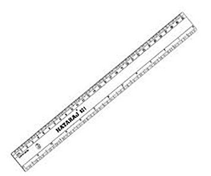

ベイカー・ストリート
©2016 Joe Saito | Template by Bootstrapious.com & ported to Hugo by Kishan B | Illustration by nomada
Rプログラミングの学習
Tutorial
R言語の学習リソース

線形目盛と対数目盛 - Linear Scale and Logarithmic Scale
Blog Post
チャートを作る：線形目盛と対数目盛を使い分ける